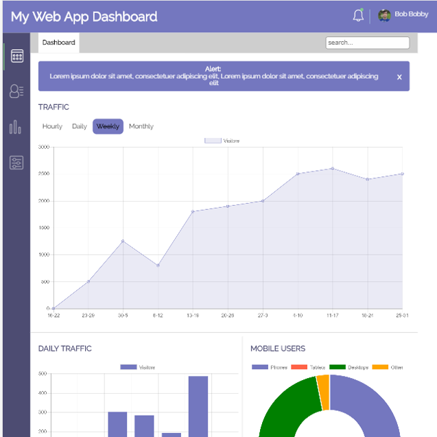

About Lars

My name is Lars. I am 20 years old, and I love front-end development. I am passionate about great design and great code. This site exists to show of the skills I have attained mainly through the Treehouse Front end development techdegree. Feel free to check out my projects, and if you like what you see please contact me for possible hiring.
Portfolio

CSS to SASS
Refactored a responsive website from CSS to SASS, and made the code way more DRY
Skills used/acquired
- Responsive Design
- SASS/CSS
- HTML5
- Media Queries
Check out a live version

Web app dashboard
Developed a webapp dashboard using graph.js, SASS and jQuery
Skills used/acquired
- graph.js
- jQuery
- Developed a site from scratch
- sgv's
Check out a live version